珍寺的篠栗霊場巡り
80番田ノ浦観音堂
珍寺的篠栗霊場巡り、お次は80番田ノ浦観音堂。
篠栗の地は町を貫くように東から西へ川が流れ、それに平行して東西に鉄道が敷かれ、国道がある。
さらに霊場の分布しているエリアの中央部からは八木山バイパスという有料道路も絡んでくる。
町全体が東西に延びるラインから構成されているのだ。
今まで紹介してきたのはそんな東西に引かれた中央軸の北側。
次に行く田ノ浦観音堂は南側のエリアである。
こちらも北側にある一ノ滝寺や文殊院同様山がちな場所だ。
八木山バイパスの下を潜り山道を進んでいくとひっそりとしたお寺が現れる。
小さなお堂にはワンちゃん連れの弘法大師が。
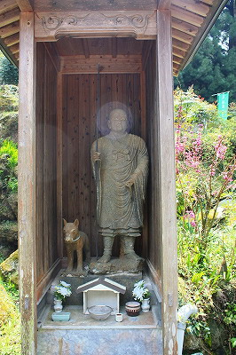
って、おおっ！大師サマの御顔に白い光が…
あ、こういうのオーブっつーんでしょ！やっぱ弘法サマだけに特殊なオーラを放ってるっつーことでしょ。
ただ、レンズを拭いたら消えちゃったんですけど、オーブ。
境内には様々な石像が並んでいるが、その大半はこうして屋根がかかっている。
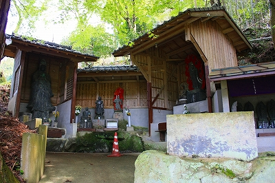
この「何としてでも屋根を掛けなければ」精神が凄いことを巻き起こすのだ。
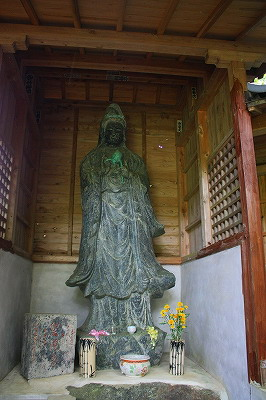
木の幹のカーブに合わせて屋根を丸く切っているあたりに並々ならぬ執念を感じてならない。
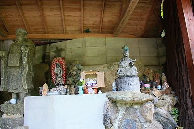 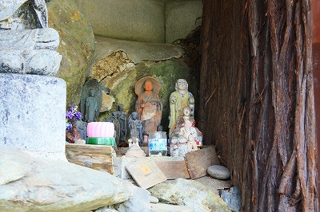
ボケーっと観ていると爽やかな若人がやってきて延々とお経を上げ始めた。
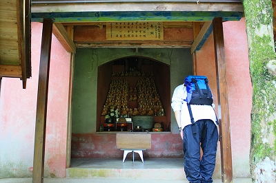
お若いのに感心ですな。
こちとら物見遊山気分ですいやせんね。
っと、中を覗くと何か違和感。
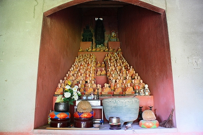
ええ？
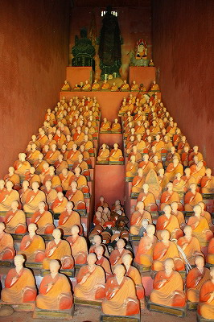
大師サマが奥の奥の奥まで！
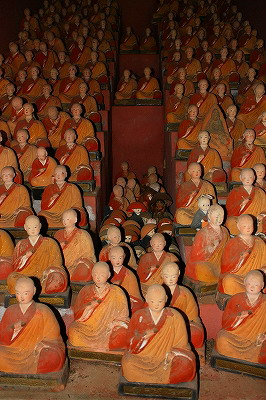
こんな小さなお堂になんでこんなパースペクティヴぶんぶんの奥行きがあるんだろか！
お堂の規模からすると、どう考えたって精々数十センチ程度しか祭壇が作れないはずなのに…
一度お堂を出て、外から眺めて納得。
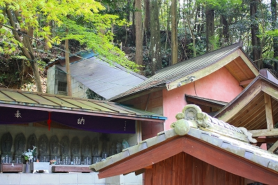 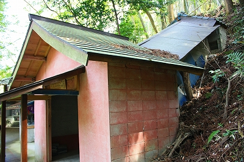
お堂の奥にさらに建物が延長されているのだ。
そういえば過去にもこの手の建物を見たことがあったっけ。
これらのいずれもが最初お堂に入ったときは奥に拝殿のようなものがあるとは感じさせないので、参拝して初めて異様に奥行きがあってビックリする仕掛けになっている。
そういう意味で症例自体は少ないが建築的ギミックとしては常套手段なのだろうか。
不思議さと神秘性と意外性を込めたこのだまし絵的構造は宗教建築にもってこいの仕掛けであろう。
宗教と建築のベクトルが見事に合致した好例といえよう。
と、一安心したところで改めてひな壇に並ぶ弘法大師軍団を見てみる。
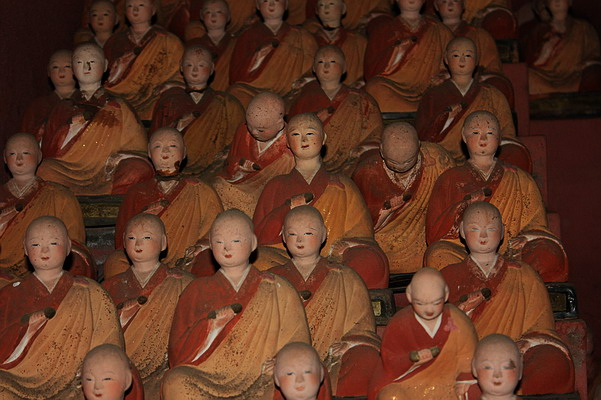
寝てる人、いませんか？
次の霊場へトライアル！
珍寺的篠栗霊場巡りTOPへ
珍寺大道場 HOME